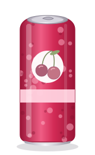
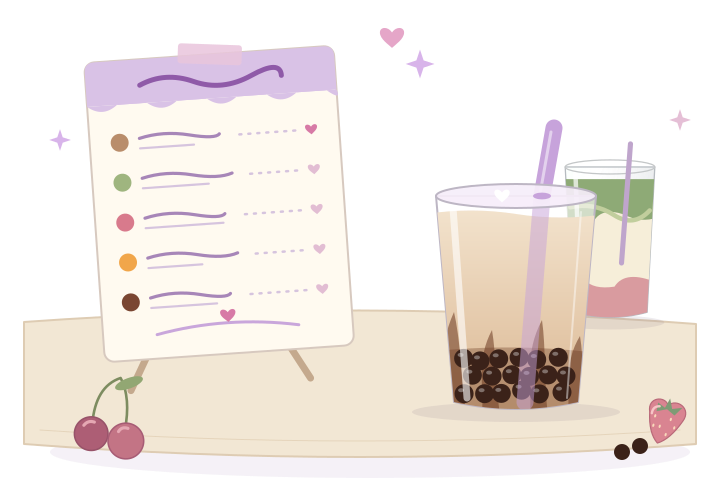
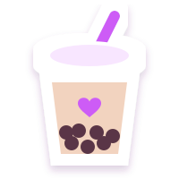
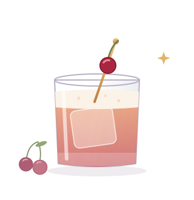

my number one ♡
Juiced Monster Mixxd Punch
My number one.
160 mg caffeine per 500 ml can
official page ↗Bubble tea, pretty little drinks, and a suspicious amount of cherry.
My bubble tea treats, matcha for slow mornings, the cans I reach for, and warm mugs for cold nights. Then there’s my evening cabinet, because I have opinions about pretty cocktail glasses, too.
Hungry too? My little kitchen is right next door.

Pick a mood and I’ll pour you something.

I have a favorite for my sweet moods, my cozy moods, and my very cherry moods.
find it on my menu ↓I have a soft spot for pretty glasses and fruity flavors. These six are my picks for nights out and slow evenings in, with a cherry signature and a very purple cocktail getting special attention.
the fold-out menusix little glasses
I pick a glass to open its page in my notebook.

My signature cocktailFor a slow evening with my favorite people
If I’m choosing a signature cocktail, obviously there’s going to be cherry involved.
Sweet almond amaretto, tart lemon, and cherry, shaken until there’s a soft foam on top.